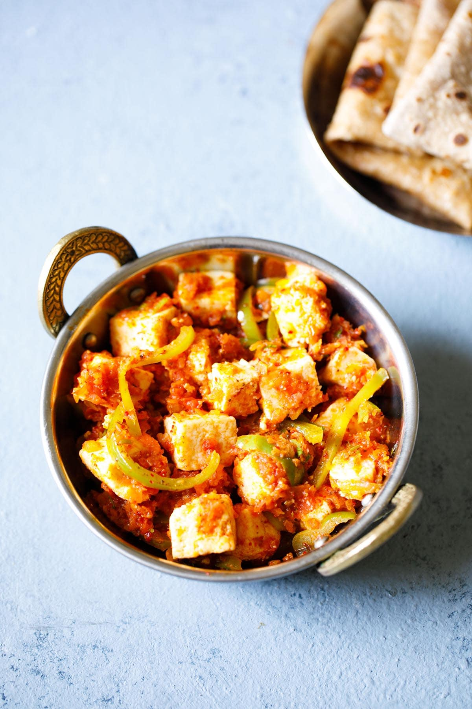

Kadhai Paneer Recipe

Description
Restaurant style kadai paneer recipe - a super popular Indian paneer gravy dish made with soft paneer cubes, perfectly cooked bell pepper and a deliciously flavorful, spicy tomato-based gravy. Serve it with a homemade naan or lachha paratha to make it a meal.
Ingredients
- Spices: Cumin seeds, Fennel seeds, coriander seeds, green cardamom, dried red chillies, black pepper corns
- Vegetables: Green pepper, tomatoes, onion, ginger, garlic paste
- Dairy products: Paneer, Heavy cream
- Some other essentials:Oil, Kadhai paneer masala, Salt, Kashmiri chili powder, Kastoori methi
Steps
- Heat the oil in a kadai (or pan) on medium heat. Once hot add chopped onion.
- Cook until onions are soft and light pink or translucent in color.
- Add garlic paste.
- Mix and saute for a minute or until the raw smell of garlic goes away.
- Now add chopped tomatoes and pureed tomato along with salt.
- Mix and let it cook until it thickens and oil starts to ooze out from the sides. This step takes some time, be patient.
- Add kadai paneer masala.
- Mix and cook for about a minute.
- Add bell pepper, ginger julienned and water.
- Mix well and let it simmer for 5 minutes or until the peppers are crisp-tender (80% cooked).
- Add kastoori methi and kashmiri red chili powder. Mix well.
- Add paneer cubes.
- Mix and simmer the gravy for a minute or two until the paneer gets hot and soft.
- Add heavy cream, mix and turn off the stove as soon as gravy starts simmering.
NOW SERVE AND ENJOY YOUR DELICIOUS KADHAI PANEER!